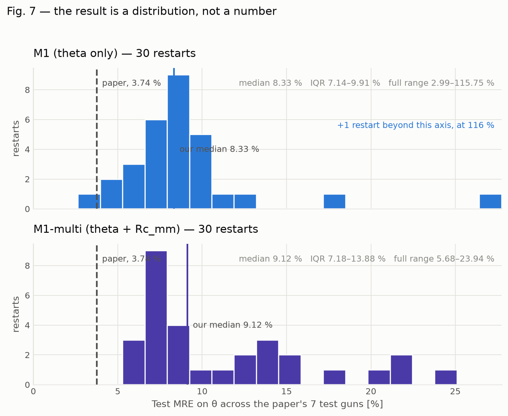
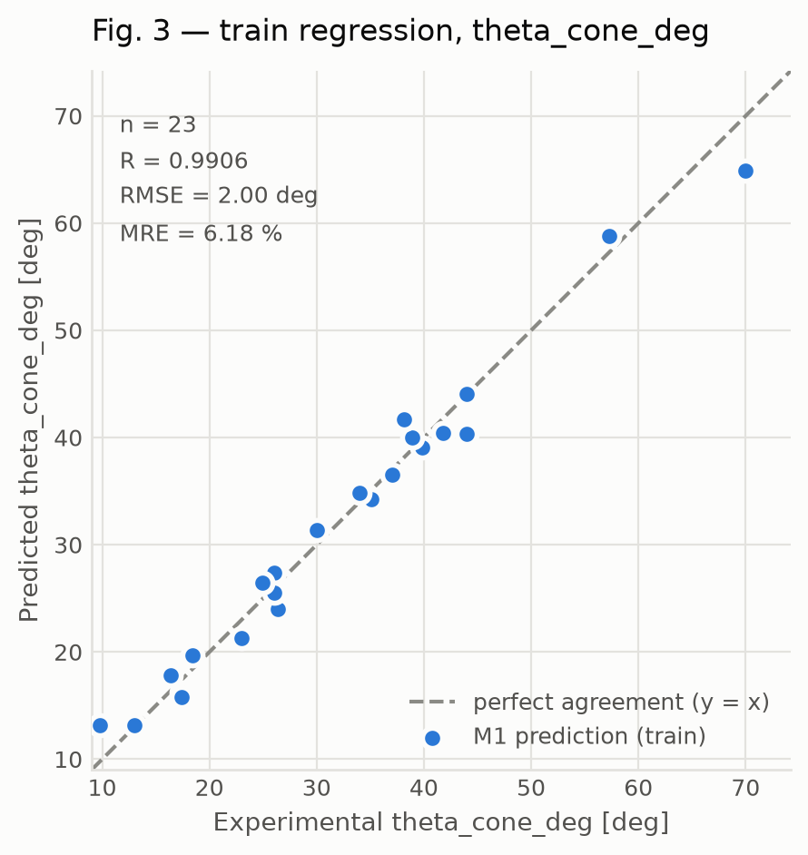
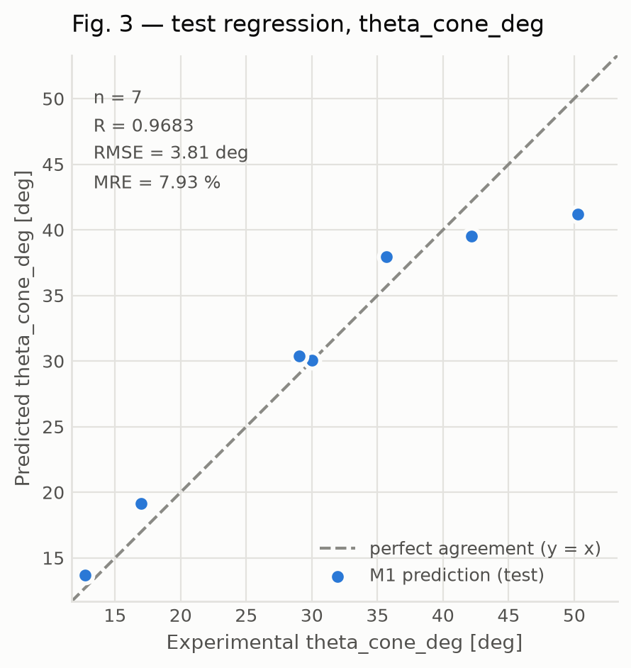
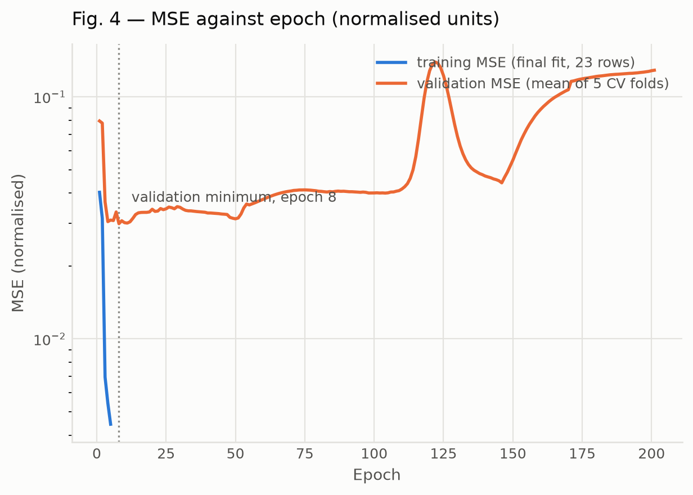
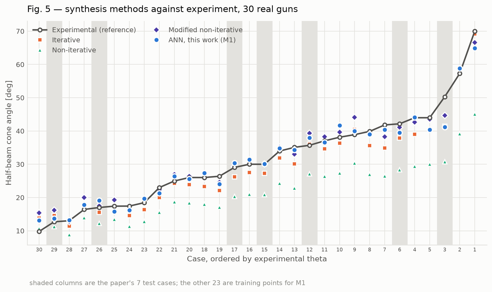
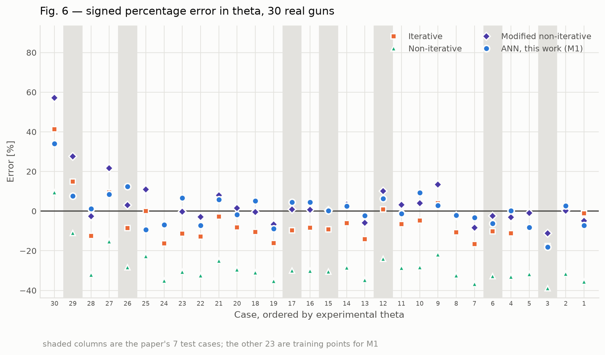

Predict
Three design inputs in, the half-beam cone angle out. The whole model is 23 numbers and three matrix multiplications, so it runs here in the page — nothing is sent anywhere, and this works offline.
Geometry that follows from θ
Comparison
Dataset
Thirty real guns, every one traceable to a printed table in a published paper. Nothing here was invented, estimated, or produced by a language model from memory.
Provenance
All 30 rows
Results
We do not reproduce the paper's reported test accuracy. That is the first thing on this page rather than the last.
The result is a distribution, not a number

What we conclude, and what we do not
Benchmark table
The paper's row is not quoted from its prose — it is recomputed from the ANN column of our own extraction of Table 2, and lands on train 2.1870 % / test 3.7437 %, RMSE 0.959 / 2.093, R 0.997 / 0.990. That it matches the printed values to the digit is what verifies our dataset, split and metric code.
Per-gun test error
Reproduced figures





Method
Everything here is implemented from scratch in NumPy — the forward pass, the Jacobian and the optimizer. No Keras, no PyTorch. The hand-written versions are the point.
The network
Why a neural network at all
Not "because it is accurate" — the honest answer is speed inside an optimisation loop. A multi-objective search with a population of 100 over 500 generations is 50 000 evaluations of θ. The classical iterative method takes milliseconds per call, which is fine once and fatal 50 000 times. The trained network is 23 numbers and three matrix multiplications: microseconds. The technical name for its role is a surrogate model — a cheap, differentiable stand-in for an expensive evaluator.
Input scaling, and the one choice that mattered
Inputs are min-max scaled to [−1, 1] using ranges taken from the training rows only, so no test information leaks into training. Before that, C is replaced by ln C.
That last step is not cosmetic. C spans 5.12 to 306.3, a factor of 60, and under linear scaling 25 of the 30 guns fall into the bottom 15 % of the range — the network sees almost every gun pressed against one end of the axis. ln C is also the coordinate the physics is written in: the synthesis enters through γ = ln(R_c/R_a). Making that change roughly halved the test error and collapsed the run-to-run spread. One held-out gun, case 12 at C = 111, went from +30.2° of error to +2.2°.
Levenberg–Marquardt, in plain language
With 23 parameters this is a small non-linear least-squares problem. Gradient descent is safe but slow and zig-zags down narrow valleys. Gauss–Newton assumes the error surface is a quadratic bowl and jumps straight to its bottom — fast near a solution, divergent far from one. Levenberg– Marquardt blends the two with a damping parameter µ:
- Large µ — the µI term dominates, the step shrinks and aligns with −Jᵀe. That is gradient descent: cautious.
- Small µ — the equation reduces to Gauss–Newton: big, well-aimed jumps. Aggressive.
- µ adapts itself. A step that lowered the error is
accepted and µ is divided by 10 — be bolder. A step that raised it is
rejected and µ multiplied by 10 — be cautious — and retried. There is no
learning rate to tune, which is why the paper used it and why MATLAB calls
it
trainlm. - It does not scale. JᵀJ is 23×23 here; for a deep network it would be millions squared. Knowing when LM is the right tool, and when it is not, is most of the point of implementing it.
The Jacobian — the strongest artefact in the repository
The Jacobian has one row per residual and one column per parameter. J[i][j] answers: if I nudge parameter j, how much does residual i change? It is a local sensitivity map, and it is what lets LM aim.
Ordinary backpropagation sums every residual's derivative into one gradient vector, which is all gradient descent needs. Least-squares needs them kept apart, so ours backpropagates each residual separately. That is a derivation done on paper and then typed in — exactly the kind of code that can be subtly wrong and still appear to train, because a sign error just makes convergence worse rather than obviously broken.
tests/test_jacobian.py.tests/test_js_python_parity.py.The physics
A Pierce gun is synthesised from the perveance P, the beam waist radius r_w and the convergence ratio C. Given the cone half-angle θ, the rest of the geometry is exact algebra:
eq (4) R_c = r_c / sin θ
Finding θ in the first place is the hard part. It comes from spherically convergent, space-charge-limited flow — the Langmuir–Blodgett problem. Starting from Poisson's equation, the radial flow function α obeys
and the diode relation closes it:
About, and what this cannot do
The limitations are not a disclaimer at the bottom of the page. They are the result.
Limitations, in full
- 23 training rows against 23 parameters. There are about as many free parameters as data points. Given enough epochs the network interpolates the training set exactly — memorisation, not learning. The shipped model is deliberately stopped after a handful of epochs, at a budget chosen by cross-validation inside the training rows.
- A tanh output cannot extrapolate. The output layer is tanh over min-max scaled targets, so it asymptotes at ±1, which maps back to the edge of the training range. It is structurally incapable of predicting an angle outside the range it was trained on, and it compresses hardest near that edge. The paper's own largest test error is this failure, on the same gun that is ours. This is measurable rather than theoretical: swept over inputs far outside the envelope — P from 0.005 to 20 µperv, C from 0.6 to 5000 — the shipped model's output never leaves 10.6° – 68.0°, against a training target range of 9.8° – 70.0°. It cannot produce an answer outside that band no matter what you ask it.
- Run-to-run variance is large. Across 30 restarts of identical code and data, test error ranged from 3 % to over 100 %. A single number from one run does not identify this model, which is why the Results tab quotes a median and a range.
- The physics gate failed. Our implementation of the classical synthesis reproduces the paper's iterative column only to MAE 1.66°, against a required 0.5°. So no synthetic data was generated — zero rows. A generator carrying 5.75 % of its own error cannot train a surrogate to beat 3.74 %; the network would faithfully learn the generator's bias, and a thousand such rows would make the model worse on real guns while making the dataset look more impressive.
- The second output is unresolved. The brief asked for the "half-beam convergence angle", but the column bearing that name holds the convergence ratio C, which is dimensionless and not an angle. Three readings remain live and the supervisor has to pick one. The placeholder currently shipped, R_c, is a deterministic function of the inputs and θ, so it exercises the multi-output machinery but adds no independent information.
- Pencil beams only. Solid, axially symmetric, circular cross-section. Sheet-beam, annular / magnetron-injection and multi-beam guns are out of scope — the spherical formulation assumes circular symmetry. The danger is that such a row would look entirely plausible in the table while obeying different geometry, so a filter and a test enforce it.
- Non-relativistic. The space-charge treatment assumes non-relativistic electrons, which bounds the beam voltages this applies to.
- No uncertainty on any individual prediction. The band shown on the Predict tab is the model's aggregate test error applied uniformly. It is not a per-point confidence interval, and the true error on any one gun may be larger.
What is solid
- The dataset. Thirty rows extracted programmatically from the PDF, not typed; the asterisked test cases independently reproduce the paper's own 23/7 split.
- A transcription error we found in our own working sheet, and corrected.
- The analytic Jacobian, verified to 1e-6 against finite differences.
- The JS/Python parity of this page, verified to 1e-9.
- The Langmuir–Blodgett solver, verified to 1e-9 against the classical series.
- The paper's own reported metrics recompute exactly from our extraction.
Source
R. Panahi, S.A.H. Feghhi, Sh. Sanaye Hajari, M. Khorsandi, "Determination of the Half-Beam cone angle for Pierce electron gun design using an artificial neural network", Results in Physics 73 (2025) 108256. doi:10.1016/j.rinp.2025.108256
The paper is open access under CC BY-NC. The 30 data rows are reproduced from its Table 2 under that licence, with attribution; this work is non-commercial. The upstream measurements originate with Frost, Purl & Johnson (1962), Tiwary & Basu (1987) and Yang, Jia & Zhu (2006), recorded per row in the dataset. Those three papers are paywalled and were not independently retrieved, which is logged rather than glossed over — and obtaining any one of them is the single item blocking the physics engine.